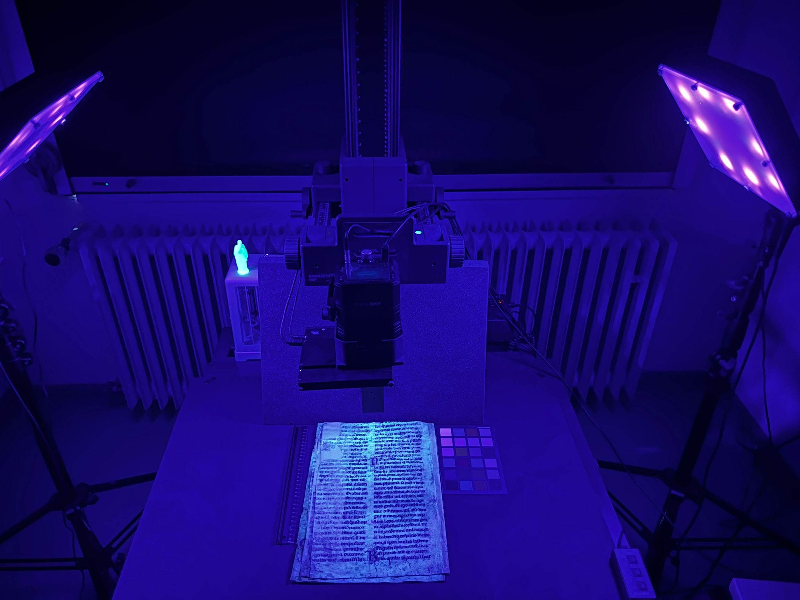
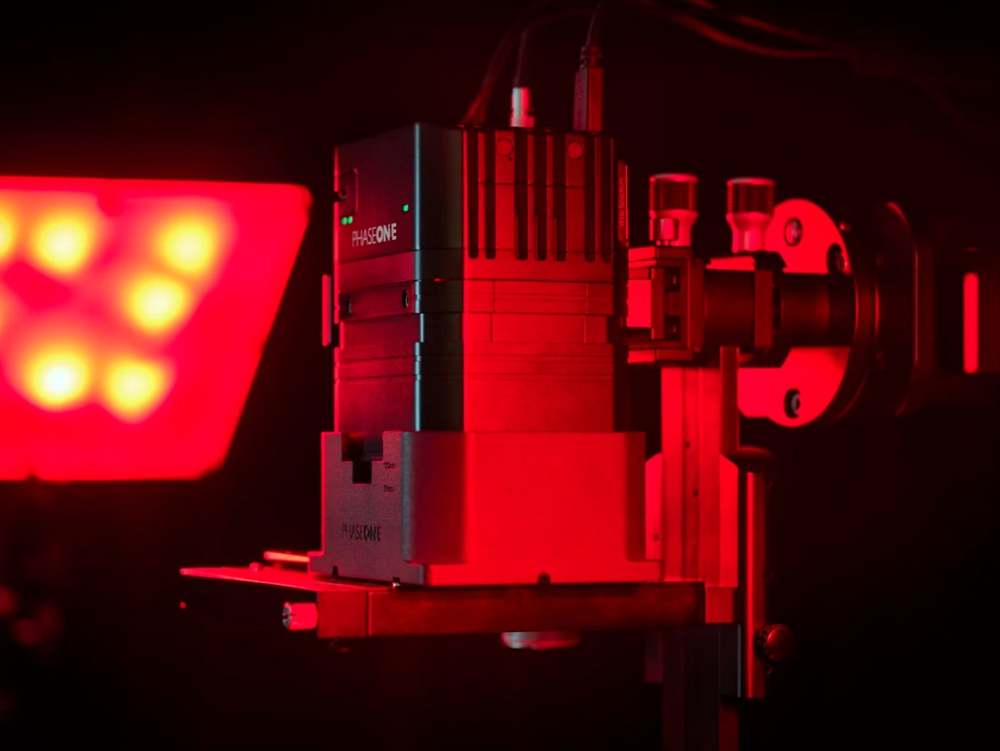
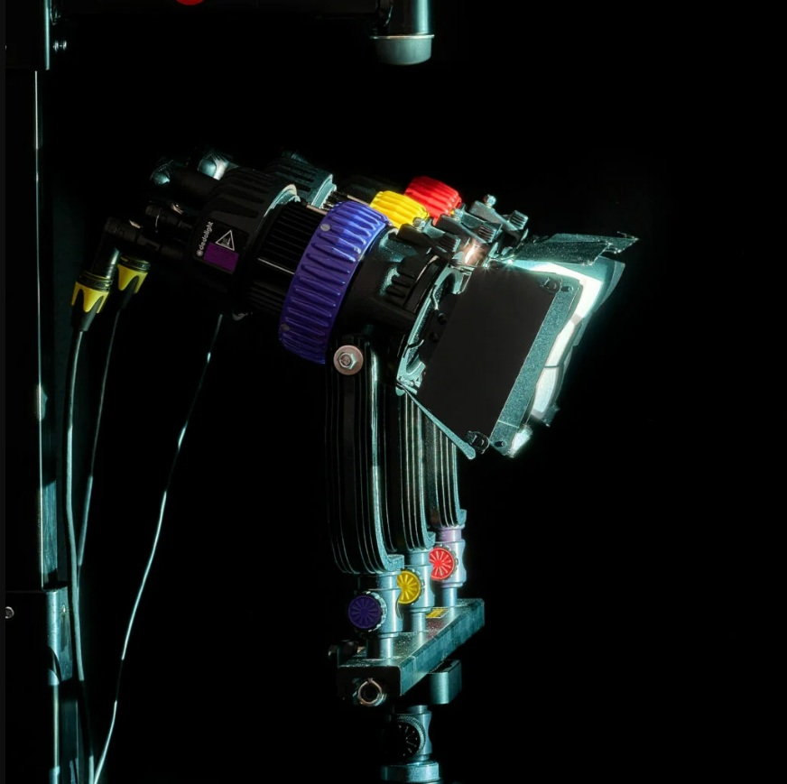
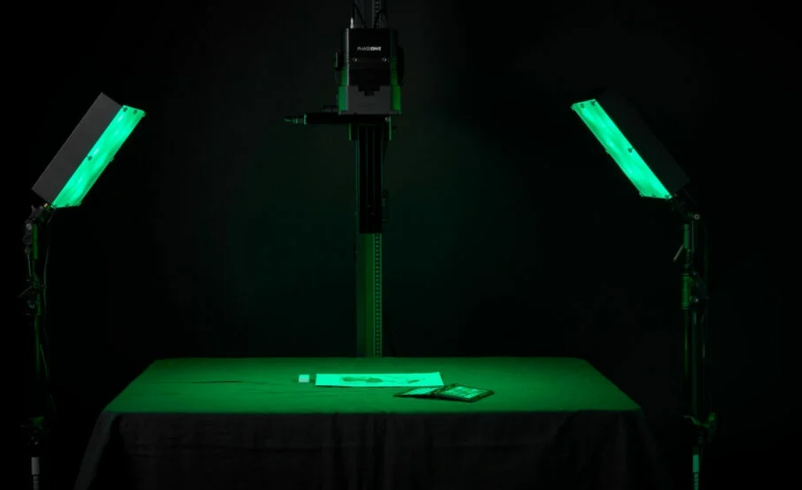
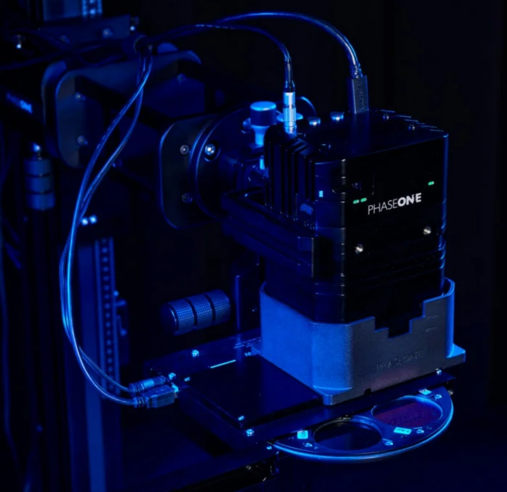
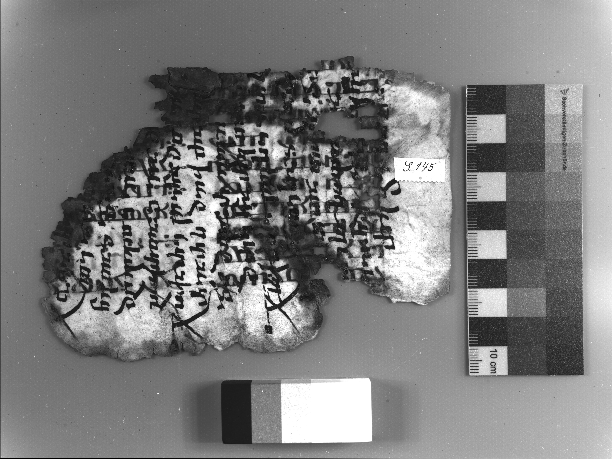
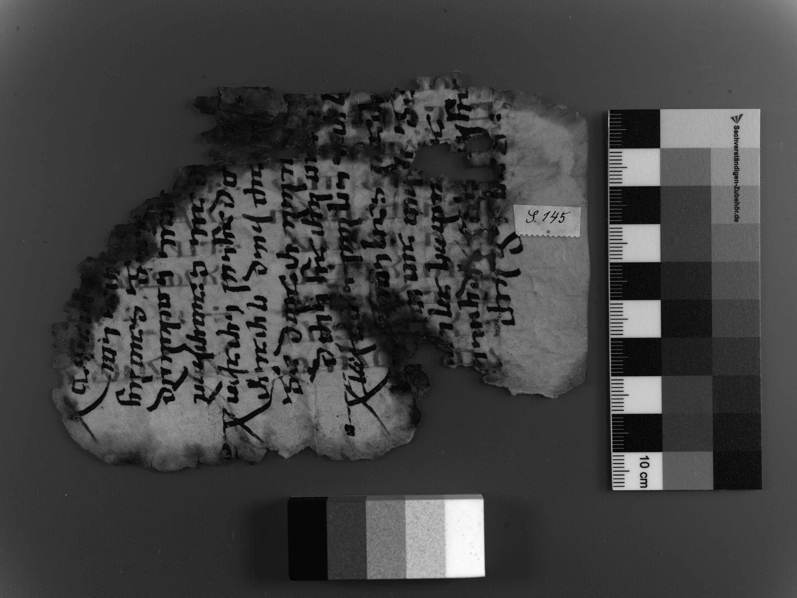
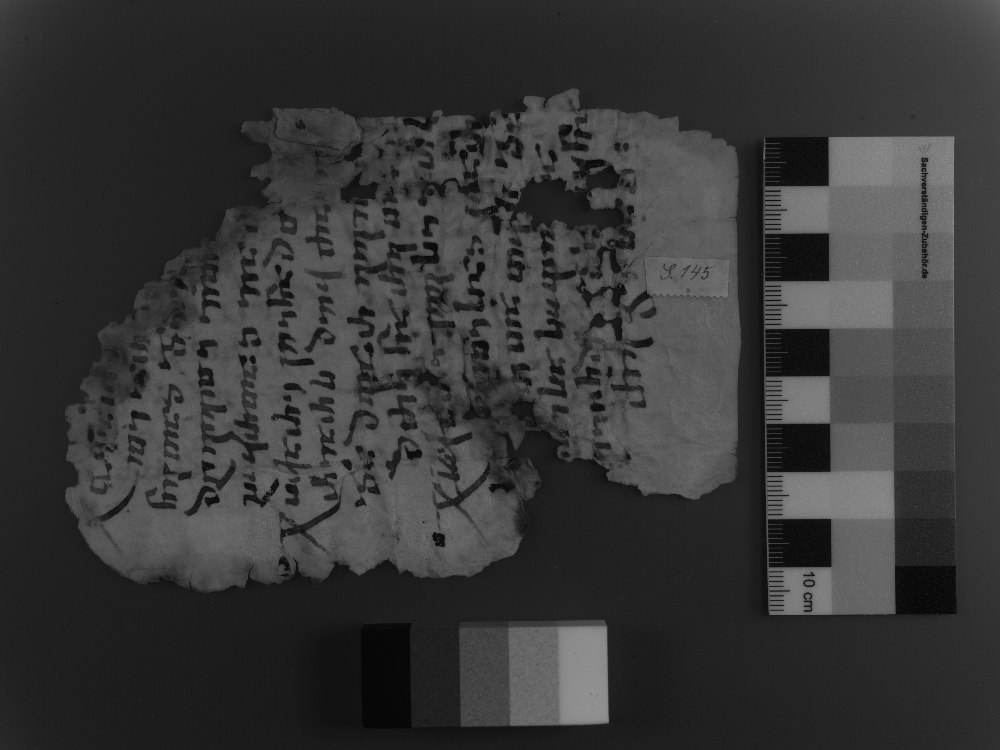
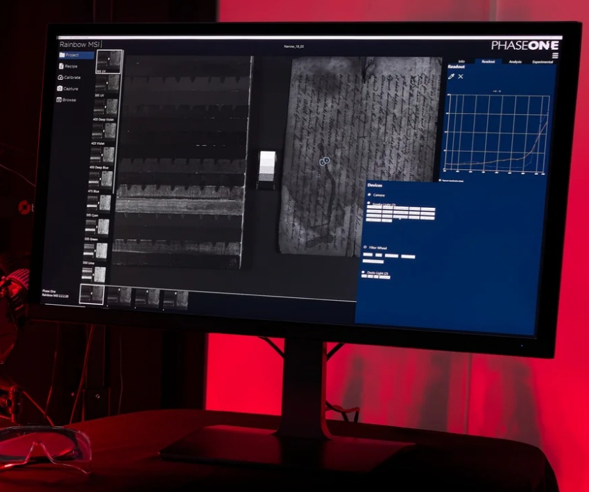

MSI Tutorial II - MSI Equipment and Techniques for Manuscripts
Rainbow software is designed to provide easy access to the set-up and capture of multispectral image stacks. The image stacks are captured and can be analysed according to the methods of multiband imaging or narrowband imaging.
The set-up is simple. It consists of two banks of LED lights, a camera, and a filter wheel. At Göttingen, we use a system designed and built by Phase One and operated by their Rainbow MSI software. This has the advantage of being portable, so that we can bring the system to the repositories where the manuscripts are located.

Cameras/ Lenses
In multispectral imaging (MSI), the quality of the camera and lens set-up plays a role in achieving accurate and repeatable results. The Phase One iXH 150MP and iXG 100MP cameras are designed for multispectral imaging (MSI) and high-quality digitization. Both cameras use high-resolution CMOS sensors that capture fine details, and an advanced focusing system that maintains colour accuracy across different wavelengths of light, allowing for consistent and repeatable results.

1. The Wide Spectrum Sensor
These cameras include a sensor which is sensitive to a broad range of light, Wide Spectrum RGB sensor, including visible, infrared (IR), and ultraviolet (UV) wavelengths. This makes them ideal for multispectral imaging, where we record data from multiple parts of the light spectrum to reveal details not visible to the naked eye. The same sensor can also be used for standard colour digitization, such as photographing manuscripts, artworks, or documents.
To switch to normal imaging, users need to attach the IR/UV cut filter using the stepping rings provided with the lens. This filter's purpose is to block the infrared and ultraviolet light, leaving only the visible spectrum. This set-up meets international digitization standards such as Metamorfoze, FADGI, and ISO 19264.
2. Live View and Light Control
The CMOS sensor also supports a live view mode, which allows us to see the subject in real time. This is helpful when we focus on fragile or rare materials, such as damaged fragments, since we can make precise adjustments without needing to touch the material.
The camera includes a custom lens shroud attached to the filter wheel. The shroud blocks unwanted light, which can otherwise interfere with multispectral captures.
3. Choosing the Right Lens
For these cameras, Schneider Kreuznach 72mm and 120mm lenses are commonly used. The 72mm lens is suitable for general digitization and flat objects. The 120mm lens provides a longer working distance, which can be useful for thicker or uneven materials. Both lenses are designed for high optical precision, meaning that they are suitable for both MSI and standard digitization work.
4. Shutter and Focus Features
The camera’s RS leaf shutter is extremely durable, rated for up to one million actuations. When using the electronic shutter, there is effectively no mechanical wear, giving it an almost unlimited lifespan.
Finally, the focusing mechanism in the iXG and iXH cameras is both precise and automated. It can measure the distance to the object and adjust the focus accordingly. With the Auto PPI (pixels per inch) feature, the system can automatically set the correct resolution for the digitization task, making it faster and easier to maintain consistent image quality.
Light Sources in Multispectral Imaging
In multispectral imaging (MSI), light control is just as important as the camera itself. The quality, type, and angle of light you use will determine how clearly the features of your object are captured at different wavelengths.
The Rainbow MSI system supports two types of LED light sources, each designed for different imaging goals.

Multiband LED lights give a combination of:
This set-up is especially useful for art conservation, cultural heritage preservation, and forensic analysis because of its non-invasive methods. By taking images under these specific light bands, conservators and researchers can identify differences in materials, previous restorations on the material, and hidden details otherwise not visible under normal lighting conditions.
The Rainbow MSI system includes some predefined “recipes” for using these lights, following the “CHARISMA” guidelines (a standard set of protocols for multispectral imaging in heritage and conservation contexts). These recipes ensure consistent illumination and repeatable results across different imaging sessions.
2. Narrowband LED Panels

Narrowband lights provide 16 distinct, narrow wavelengths ranging from UV through visible to IR. This more specialised set-up is used for scientific analysis, especially for ink and pigment analysis in fragments, manuscripts or paintings; to detect erased texts, stains and residues; to improve readability of palimpsests or damaged/faded pages; and to reveal underdrawings in paintings and artefacts.
Since each wavelength interacts differently with materials, narrowband MSI allows researchers to isolate and study specific layers, substances, or deterioration patterns.
3. Preventing Light Pollution
When imaging under Multispectral Light, it is essential to eliminate all external light sources. Any unwanted source of light can contaminate your results and distort the spectral data. For this reason, it is advisable to always work in a completely dark room, using only the supplied LED lights. If your workspace cannot be fully darkened, try using blackout curtains or light-blocking panels to minimize unwanted light exposure.
4. Proper Light Positioning
The position and angle of your light sources are critical for achieving even illumination and avoiding glare. Both LED lights should be set at a 45-degree angle from the object surface at a distance of 1 to 2 meters. This creates a balanced lighting environment that reduces reflections and evenly distributes light across the imaging field.
5. Calibration Materials
Before capturing your MSI data, you’ll need to perform calibration to ensure that the system records light accurately. For this step, prepare one of the following:
But keep in mind, you should avoid using a completely dark background. Dark surfaces can absorb too much infrared light, and this can cause problems such as poor IR reflectance or “hot spot” effects, which are bright central patches caused by uneven light reflection.
By following these guidelines, you ensure that your light set-up produces clear, consistent, and scientifically reliable MSI data.
Filters
UV Filter (~380nm) Short Wave

Ultraviolet (UV) imaging in MSI concentrates of a short wave range/length of ca. 320-380nm. Due to the shallow penetration depth of short-wave illumination, this filter documents primarily features of the top layer of the manuscript. Reflection (ca. 320 nm) is an important reaction of the object as it can:
Another reaction of UV is fluorescence (ca. 360nm):
UV reflection and fluorescence are, therefore, particularly effective in documenting mechanical surface damage and characteristics, erased ink and pigments and application technique. However, its limitations to penetrate beneath further restricts its usefulness.

Cod. Ms. Syr. 23, fol.145a, Staats- und Universitätsbibliothek, Göttingen, processed, UV.
Visible Light (400-780 nm)
Visible light (VIS) forms the reference dataset for MSI. It is typically subdivided into discrete bands. Conventional photography captures the visible spectrum as “composite RGB”, while MSI isolates these bands individually to enhance “chromatic” differences:

Cod. Ms. Syr. 23, fol.145a, Staats- und Universitätsbibliothek, Göttingen, processed, “lime”.
Infrared filter (780~nm) Long Wave
Infrared (IR) imaging typically operates from 780nm up to 1000nm. Compared to UV, infrared can penetrate deeper into material due to its longer wavelength and reveal those underlying layer beneath the surface features.
IR imaging differentiates materials primarily by their chemical composition rather than visible colour.

Cod. Ms. Syr. 23, fol.145a, Staats- und Universitätsbibliothek, Göttingen, processed, IR.
Imaging Software — Rainbow
The Rainbow software controls the entire imaging process from system set-up to reviewing the images. Its interface is organized into five main workflow steps, shown as tabs on the left side of the screen, as follows: Project, Recipe, Calibrate, Capture, and Browse. Each tab represents a stage of the workflow and guides the user through a complete and repeatable imaging sequence. In Narrowband imaging mode, an additional Export tab is available for preparing data for Paleo Toolbox.
Start with the Project tab, where you create a new project and choose where your image data and calibration files will be saved. Each imaging session should have its own project folder to keep the data well-organized. At this stage, also confirm that the camera, filter wheel, and lights are correctly positioned and securely connected.

In the Recipe tab, select or create the imaging configuration that defines how the captures will be performed. The chosen recipe specifies which filters and light sources will be used, the order of captures, and the exposure settings for each wavelength. As mentioned above, there are predefined recipes you could use, or you can opt out to create your own for your own special requirements.
Next, move to the Calibrate tab to ensure image accuracy. Calibration maintains consistency of lighting, focus, and exposure across all wavelengths. The calibration stages include Focus and Alignment, Flat-Field Compensation, and Exposure Compensation. These must be performed carefully before each imaging session. If at any point there is a need to change the position of the camera, filter wheel, or lights, this means you must repeat all calibration steps before capturing new data. Even small adjustments can affect accuracy.
After calibration, go to the Capture tab. Use the Live View mode to position the object and verify focus and illumination. You can then begin capturing according to your chosen recipe. The sequence will automatically record images under each selected light and filter combination, adding the light/filter combination next to the name you give to your file before you start the capturing process.
Once captures are complete, open the Browse tab to review the results. Here you can check image quality, exposure consistency, and verify that all calibration and capture files have been correctly saved. From this screen you can also organize your image stacks for further processing or analysis. In Narrowband mode, you can export processed data directly to Paleo Toolbox.
By following this workflow, you ensure a smooth, repeatable process from set-up to final review. Consistency in each stage is key to producing scientifically reliable and visually accurate multispectral images.
Case Studies using the Phase One Rainbow MSI System:
To see examples of how the Phase One Rainbow system has been used in practice, explore the following case studies from the Phase One website:
• Recovering Ancient Chinese Records with Multispectral Imaging
• Revealing Lost Evidence of Ålesund’s Fire with Rainbow Multispectral Imaging
• The Royal Library of Denmark – Preserving Cultural Heritage